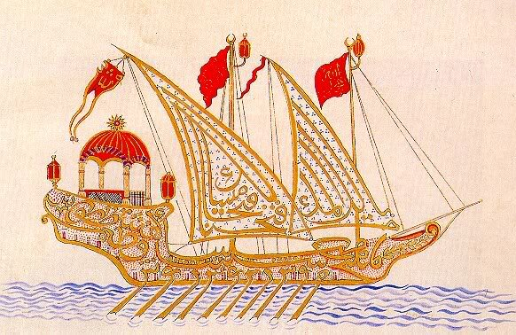

Турецкая галера. Образец турецкой каллиграфии. Миниатюра из манускрипта
В середине мая турки имели у Кипра флот из 250 судов, под началом муэзина Заде-Али и 80-тысячную армию. Сосредоточение таких больших сил оказалось возможным только благодаря неготовности союзников, т. к. значительная часть турецких судов была вооружена мусульманскими государствами Северной Африки и не могла бы прибыть к Кипру, если бы союзные флоты были готовы ранее. Но турки опять допустили крупную стратегическую ошибку: они сейчас же приступили к овладению Кипром, вместо того, чтобы обратиться к операциям против разрозненных эскадр союзников, из которых венецианская. эскадра Кирини была опять выдвинута далеко вперед. Только в первых числах июня, когда стало очевидно, что участь Фамагусты предрешена, Али с частью войск, под началом Первета-паши, двинулся на запад. В середине июня Али подошел к Судской бухте, надеясь захватить здесь эскадру Кирини; но последний уже успел уйти в укрепленную Канею. Попытка турок взять Канею окончилась неудачей и стоила им около 4 тысяч человек. Тогда они разорили побережье и направились к о. Цериго, который постигла та же участь. Отсюда турецкий флот перешел в Наварин, затем двинулся на север ко входу в Адриатическое море, и овладел по дороге островами Занте и Кефалонией. Все эти операции замедляли его движение и давали возможность союзникам подвинуть вперед свои приготовления, которые и к этому моменту оказались далеко не законченными, а флоты разбросанными. Особенно было тяжело положение венецианских отрядов на Крите и Корфу, т. к. турки занимали центральное между ними положение. Для венецианского адмирала Вениеро идти в Мессину значило открыть туркам путь к Венеции. Но отступление его в глубь Адриатического моря являлось бы нарушением выработанного плана, и притом с одними своими слабыми силами он все равно защитить Венецию не мог. Кроме того, отступление именно венецианцев, главных инициаторов "лиги" и наиболее заинтересованных в ее успехе, повлекло бы за собой ее распадение. В виду этих соображений Вениеро в последний момент, накануне подхода турок к Корфу, направился в Мессину и приказал следовать туда же эскадре Кирини. Отступление удалось обоим все из-за той же основной ошибки турок, не обращавших внимания на морские силы союзников и продолжавших заниматься осадой крепостей. Крепость на Корфу им взять не удалось; но Дульциньо, Антивари и ряд мелких укрепленных пунктов попали в руки турок, а когда они принялись за осаду Катаро и Зары, то получили сведения о сосредоточении флотов союзников в Мессине. Надвигалась опасность генерального сражения, а между тем турецкий флот был ослаблен в людях и боевых припасах. В виду этого Али-паша отступил в Лепанто, где за узким проливом он мог себя чувствовать в полной безопасности, спокойно выжидая подкреплений и наступления дальнейших событий. Позиция турок была чрезвычайно выгодная, т. к. лишала флот "Священной Лиги" объекта действий. Через месяц или полтора наступал уже период бурных погод, и союзники должны были разойтись по портам, а новое их сосредоточение являлось очень сомнительным. Уже в расчете на кампанию будущего года Али отправил отряд из 60 галер в Эгейское море за подкреплениями и припасами. Только 24 августа прибыл в Мессину Дон-Жуан и вышел отсюда в Корфу 15 сентября, т.е. уже тогда, когда Али был давно в Лепанто. 3 недели было посвящено на организацию флота (202 галеры, 6 галеасов и 24 больших нефов, служивших транспортами).